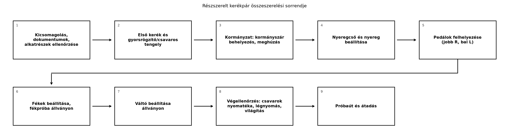

Kerékpárjavító műhelyben az egyik leggyakoribb két munka a dobozból érkező, részben összeszerelt kerékpár üzembe helyezése, illetve a már használatban lévő kerékpár időszakos szervize. Mindkettő ugyanarra a logikára épül: előbb az egységek helyes összeszerelését és beállítását kell elvégezni, majd az egész járművet balesetmentes, megbízható működésre kell ellenőrizni.
Ha egy csavart, pedált, féket vagy váltóbeállítást elrontunk, annak közvetlen baleseti következménye lehet: kioldódó kormány, leeső első kerék, rosszul rögzített pedál vagy nem megfelelően húzó fék. Az autószerelői szemlélet itt is érvényes: a gyártói adat az első, a sorrendnek és a meghúzási nyomatéknak jelentősége van, és minden beállítást próbával ellenőrzünk.
Az alfejezet a Kerékpárok szerkezete: váz, hajtómű, fék és futómű alfejezetre épül; az itt megtanult szerelési eljárások az autószerelői gyakorlatban is hasznos gépelem-szerelési és hibakeresési mintát adnak.
Dobozos kerékpárnál a váz, a hátsó kerék, a hajtómű és gyakran a váltórendszer már fel van szerelve. A dobozban külön egységként találjuk az első kereket, a kormányszárat a kormánnyal, a nyeregcsövet, a pedálokat, a gyorsrögzítőket, a világításokat és a szerelési útmutatót.
A munka tipikus képe: a kerékpár egy szerelőállványra van fogva, úgy, hogy a szorítóbilincs ne a vázat deformálja, hanem a nyeregcsövet vagy a vázszárat fogja. A műhelyasztalon imbuszkulcsok, nyomatékkulcs, csavarmeghúzó, bowdenvágó, zsír, láncolaj, gumiabroncsnyomás-mérő és tisztítószer van kikészítve. Mielőtt bármelyik rögzítést meghúznánk, az összes alkatrészt azonosítjuk a gyártói lista szerint.

A folyamatábra azt mutatja, hogy a biztonsági szempontból kritikus rögzítéseket előbb végezzük el, utána állítjuk be a féket és a váltót, és csak a végellenőrzés (csavarnyomatékok, légnyomás, világítás) után következik a próbaút, mert a beállítások értelmezhetőségéhez a kerékpárnak már stabilan, a végleges geometriájával kell állnia.
Definíció. Részszerelt kerékpár üzembe helyezése az a műveletsor, amelyben a gyárilag elkészített, de szállítás miatt szétszerelt egységeket a gyártó útmutatója szerint összeszereljük, beállítjuk, ellenőrizzük, és a kerékpárt használatra alkalmas állapotba hozzuk.
Definíció. Megelőző karbantartás a kerékpár tisztításából, ellenőrzéséből, utánállításából és a kopó alkatrészek állapotfelméréséből álló, előírt időszakonként végzett szolgáltatás. Célja a meghibásodás megelőzése.
Definíció. Időszakos karbantartás a kopó alkatrészek (lánc, fogaskeréksor, fékbetét, csapágy, bowden és belső huzal) ellenőrzését, cseréjét, valamint a jármű teljes biztonsági felülvizsgálatát magában foglaló művelet.
Definíció. Minőségi alkatrészcsere a kopott vagy sérült részegység gyártó által előírt új, az eredeti specifikációnak megfelelő alkatrésszel történő pótlása. Nem azonos a „beállítgatással”: ha a lánc vagy a fékbetét kopása eléri a határértéket, cserélni kell, nem pedig megfeszíteni.
Összefüggés. A meghúzási nyomaték alapképlete a kerékpáron is ugyanaz, mint a járműveknél:
ahol a nyomaték -ben, az erő -ban, a kulcs erőkarja -ben. A gyakorlatban nem az erőt számolgatjuk, hanem nyomatékkulcsot használunk a gyártó által megadott értékre állítva.
Összefüggés. A lánc kopását nyúlásban mérjük. A százalékos nyúlás:
ahol a mért hosszváltozás, az eredeti mérőszakasz. A kerékpárlánc jellemző kopási határa 0,5–0,75% (ellenőrizendő: a lánc- és fogaskerékgyártó adata).
A dobozból kivett kerékpárnál a munka sorrendje az, hogy először a nagy, biztonsági szempontból fontos egységeket rögzítjük, majd a finombeállításokat végezzük.
Az első kerék beszerelésénél a tengelyt teljesen be kell ültetni a villa nyílásába, a gyorsrögzítőt vagy csavaros tengelyt a gyártói nyomatékkal kell meghúzni, majd a kereket megforgatva ellenőrizni, hogy a tárcsafék vagy a fékbetét nem súrlódik-e. A fékoldalon a rögzítőt nem szabad túlfeszíteni, mert a villa deformálódhat.
A kormányszár behelyezésénél a szárnak legalább a gyártó által jelölt minimális befogási mélységig kell érnie. A kormányt úgy kell pozicionálni, hogy az alkar és a kormány megfogása közben a csukló természetes helyzetben maradjon. A szárat rögzítő csavarokat fokozatosan, átlósan kell meghúzni.
Szabály. Ahead-kormánycsapágynál először a fedőcsavarral beállítjuk a csapágy előfeszítését (az első féket behúzva előre-hátra mozgatva nincs kotyogás, a kormány szorulás nélkül fordul), csak ezután állítjuk egyenesbe a kormányt, és húzzuk meg a szár szorítócsavarjait váltakozva, a gyártói nyomatékra (ellenőrizendő). A kerék rögzítését külön, a gyorsrögzítő vagy a tengelyanya gyártói nyomatékával ellenőrizzük; végül az egész járművet terhelve (kézzel lenyomva) ellenőrizzük a kötéseket. Ha a kormány elfordul vagy a kerék a tengelyénél kotyog, a rögzítést meg kell ismételni.
A nyeregmagasságot a felhasználó testméreteihez kell állítani. Kiinduló értéknek a belső lábhossz és a nyeregmagasság között a mérési gyakorlatban használt szorzót alkalmazzuk, ahol a hajtókar-tengely (középcsapágy) közepétől a nyereg tetejéig mért távolság a nyeregcső vonalában (tanulási közelítés, ellenőrizendő):
Ezt követően a próba során a nyeregmagasságot és a nyereg előre–hátra pozícióját a felhasználó érzése szerint finomítjuk. A nyeregcsőnek a vázszárban a minimális befogási mélység alá nem szabad mennie; ezt a csövön lévő jelzés mutatja (jellemzően legalább 7 cm-es befogás – ellenőrizendő: a kerékpárváz és nyeregcső gyártója).
A pedálokat két oldalon különböző menetiránnyal szerelik. A jobb oldali pedál jobbos menetű, a bal oldali balos menetű; ezért a bal pedált az óramutató járásával ellentétesen kell behajtani. A pedáltengely menetét vékonyan meg kell kenni, és a gyártói nyomatékkal kell meghúzni.
A fékbeállításnál a keréknek szabadon kell forognia, a fékbetét nem érhet a tárcsához vagy a felnihez, amikor a fék nincs behúzva. A fékbetét kopási síkjának párhuzamosnak kell lennie a fékezett felülettel. A karon a fogás pontja úgy állítandó, hogy a fékhatás a kar meghúzásának első harmadában érezhető legyen, de a kar ne érjen a kormánycsőhöz teljes behúzáskor.
Figyelem. A hidraulikus tárcsaféknél a fékfolyadékot csak a gyártó által előírt típussal lehet utántölteni; az ásványolaj és a DOT-fékfolyadék nem keverhető. A munka során a fékfolyadék a festett felületre ne kerüljön.
A váltó beállításához a hajtóművet hajtani kell, ezért a kerékpárt állványra kell helyezni, vagy a hátsó kereket megemelni. A váltókar vagy a váltócsavar feszességét úgy kell beállítani, hogy a lánc minden fogaskerék pozícióban pontosan, késedelem nélkül fel- és leugorjon, és ne csússzon, ne essen le.
Szabály. A hátsó váltónál a H (high) és L (low) csavar a lánc útját határolja, a B-csavar a váltógörgő és a legnagyobb fogaskerék közötti távolságot állítja. A pontos beállítási értékek a váltó gyártójának adatai (ellenőrizendő: gyártói szervizinformáció).
A képsor sorrendje: (1) a váltószem egyenességének ellenőrzése – elhajlott váltószemmel a beállítás nem sikerülhet; (2) a H csavar a legkisebb fogaskeréken a felső váltógörgőt a fogaskerék síkjába állítja; (3) a huzal rögzítése után a bowdenfeszítővel fokozatonként finomhangolunk; (4) az L csavar a legnagyobb fogaskeréken megakadályozza, hogy a váltó a küllők közé jusson. Az (5)–(6) kocka a láncmérő helyes (feszes láncon, erőltetés nélkül) és hibás használatát mutatja a 0,5 % és 0,75 % határral. Az interaktív változat lépésenként, magyarázattal játssza le a képsort.
1. példa. Egy ügyfél belső lábhossza . Adjuk meg a kiinduló nyeregmagasságot a -es szorzóval.
Számítás. . A nyereg pontos magasságát a próba során finomítjuk, mert a számított érték kiinduló, nem végleges beállítás. Ha a felhasználó ülőhelyzete fájdalmat okoz, a tünet szerint módosítunk.
2. példa. A láncmérővel a lánc hossza mérőszakaszon -t nyúlt. Határozzuk meg a nyúlás százalékát, és döntsünk a cseréről.
Számítás. . Mivel a jellemző lánc- és fogaskerékgyártói gyakorlatban 0,75% fölött a láncot cserélni kell, és gyakran a fogaskeréksor is kopott (ellenőrizendő: az aktuális kopáshatár a gyártó adata), a javaslat a lánc és rendszerint a fogaskeréksor cseréje.
3. példa. A hajtókar rögzítőcsavarját nyomatékkal kell meghúzni. A kulcs hossza . Mekkora erőt kell a kulcs végére kifejteni? A feladat a nyomaték–erőkar összefüggés felidézésére szolgál, bár a gyakorlatban nyomatékkulcsot használunk.
Számítás. . Ez körülbelül 16 kg-os súlynak megfelelő erő. A pontos nyomatékot azonban a nyomatékkulcsra állítva érjük el, nem kézi erőbecsléssel.
Az ellenőrzés mindig a gyártói adathoz, a kopási határhoz és a jármű biztonsági követelményéhez képest történik. A kerékpárnál a legfontosabb ellenőrző lista:
| Rendszer | Mit ellenőrzünk? | Milyen eszközzel? | Jellemző elfogadási érték | Forrás |
|---|---|---|---|---|
| Kormány/rögzítés | elfordulás, kotyogás | kézi terhelés, nyomatékkulcs | nincs elmozdulás | gyártói adat |
| Keréktengely | oldalirányú játék | kézi ellenőrzés | nincs érzékelhető játék | gyártói adat |
| Fék | fékerő, szabad futás | próbaút, kézi erő | a kar ne érjen a kormányhoz | gyártói beállítás |
| Váltó | fel- és leugrás minden fokozatban | próbaút, állványon hajtás | nincs késedelem, láncleesés | gyártói beállítás |
| Lánc | nyúlás | lánckopás-mérő | 0,5–0,75% alatt | gyártói kopási adat |
| Gumiabroncs | nyomás, repedés, mintamélység | nyomásmérő, szemrevételezés | a gyártó által megadott bar | gyártói adat |
Az értékek tanulási példák (ellenőrizendő: a kerékpár és az alkatrész gyártójának adatai). A gyakorlati munkalapon a tényleges értéket mindig a szerelési utasításból vesszük.
Egy ügyfél azzal érkezik, hogy a kerékpárja „nyikorog, a fék gyenge, és a váltó ugrál”. A munkalap szerinti első lépés a tünetek rögzítése és a kerékpár állványra vétele.
A szemrevételezésnél a lánc erősen koszos, a fékbetét vékony, a hátsó váltó bowdenhuzala pedig megtört. A láncmérő a láncra illesztve beleesik a 0,75%-os nyúlásjel alá: a lánc eléri a kopási határt. A fogaskeréksor fogai horgassá, kopottá váltak. A fékbetét mérése a gyártó által megadott minimális vastagság alatt van.
A javítás során a láncot és a fogaskeréksort együtt cseréljük, mert a kopott lánc és az új fogaskeréksor nem illeszkedik jól, és gyors kopást okoz. A váltó belső huzalát is cseréljük, mert a megtört huzal akadozik. A fékbetéteket újra cseréljük, a tárcsát ellenőrizzük, és a féket légtelenítjük/utánállítjuk. A próbaút előtt a csavarokat nyomatékkulccsal ellenőrizzük, a gumiabroncsnyomást beállítjuk, és a lámpákat is megvizsgáljuk.
A tanulság: a három tünetet nem három külön beállítással oldottuk meg, hanem a kopási határok ellenőrzésével és a kopó alkatrészek minőségi cseréjével.
Biztonsági korlát. A feladat tanműhelyi környezetre, oktató felügyeletére és a gyártói javítási utasítás betartására vonatkozik; a megadott értékek tanulási példák.
Cél. A dobozos kerékpár balesetmentes, a gyártói előírásnak megfelelő üzembe helyezése.
Szükséges szerszámok és anyagok. Imbuszkulcs-készlet, csavarkulcsok, nyomatékkulcs, csavarmeghúzó, láncvágó, gumiabroncsnyomás-mérő, lánckopás-mérő, zsír, láncolaj, tisztítószer, tiszta rongy.
Munkavédelmi és környezetvédelmi lépések. A kerékpárt stabil szerelőállványra fogjuk; a sérült akkumulátort vagy hajtáselektronikát nem érintjük. Az olajos rongyokat és az elhasznált alkatrészeket szelektíven gyűjtjük.
Munkalépések:
Dokumentálás. A munkalapon rögzítjük a kerékpár típusát, vázszámát, a beállított gumiabroncsnyomást, a meghúzási nyomatékokat és a próba eredményét.
Biztonsági korlát. A feladat tanműhelyi környezetre, oktató felügyeletére és a gyártói javítási utasítás betartására vonatkozik; a megadott értékek tanulási példák.
Cél. A kopó alkatrészek ellenőrzése, minőségi cseréje, a váltó és fék beállítása, valamint a teljes biztonsági felülvizsgálat.
Szükséges eszközök. Lánckopás-mérő, láncvágó, csavarkulcsok, kazetta- és lánckerék-lehúzó, zsírtalanító, láncolaj, fékbetét-ellenőrző, nyomatékkulcs.
Munkalépések:
Dokumentálás. A munkalapon a cserélt alkatrészeket, a mért kopási értékeket és a beállítási adatokat rögzítjük. A régi láncot és fogaskeréksort szelektív hulladékgyűjtőbe tesszük.
Az elektromos rásegítésű kerékpár (pedelec) villamos hajtása nagy kapacitású lítiumion-akkumulátort tartalmaz. A szerelés megkezdése előtt az akkumulátort ki kell kapcsolni, és a gyártói utasítás szerint le kell választani vagy ki kell venni a tartókeretből.
Figyelem. A lítiumion-akkumulátor sérült cellája zárlatot, hőmegfutást és tüzet okozhat. Tilos az akkumulátort felnyitni, a sarkait rövidre zárni, vízbe meríteni, ütni vagy forró felületre helyezni. A sérült akkumulátort a gyártó mentési és kezelési útmutatója szerint kell félretenni (ellenőrizendő: az akkumulátor gyártójának biztonsági adatlapja).
Figyelem: akkumulátor- és zárlatveszély. A pedelec 24–48 V-os rendszere nem nagyfeszültségű, érintésvédelmi szempontból kis kockázatú, de az akkumulátor zárlati árama égést, ívet és tüzet okozhat. A szerelés során a gyártó által meghatározott feszültségmentesítést be kell tartani. Az akkumulátort mindig a gyártói kapcsolóval vagy a zárt csatlakozó leválasztásával kell áramtalanítani, és a csatlakozót visszakapcsolás ellen biztosítani. A hajtásrendszer nagy áramú vezetékein csak feszültségmentes állapotban dolgozhatunk.
Gyakorlati eljárás e-kerékpár szervizhez:
Környezetvédelem. Az elhasznált lítiumion-akkumulátor veszélyes hulladék; a gyártó vagy a gyűjtőpont szerinti visszavételre kell leadni. A tűzveszélyes akkumulátort nem szabad a kommunális hulladékhoz dobni.
1. hiba: a bal pedált jobbos menetként behajtani. A bal pedál balos menetű, ezért a jobbos menetirányú behajtás tönkreteszi a hajtókar és a pedál menetét. A helyes gyakorlat: a pedálokon lévő L és R jelölés ellenőrzése, majd a megfelelő irányú behajtás.
2. hiba: a kormány- vagy nyeregcső-bilincset túlhúzni. A túlzott nyomaték deformálja a csövet vagy a vázhüvelyt, és repedést okozhat. A helyes gyakorlat: a gyártói nyomatékot betartani, a kötést terheléssel ellenőrizni.
3. hiba: a láncot túlfeszíteni. A túlfeszített lánc a hajtómű és a hátsó kerék csapágyait terheli, és gyors kopást okoz. A láncnak a gyártó által előírt belógása legyen.
4. hiba: a tárcsafék beállítását a kerék nem központos helyzetében végezni. Ha az első kerék a villában nem ül teljesen, a tárcsafék súrlódik, és a fékhatás pontatlan. A helyes gyakorlat: a kereket központosan rögzíteni, majd a féket beállítani.
5. hiba: a sérült lítiumion-akkumulátort a használt akkumulátorok közé dobni. A sérült cella hőmegfutást okozhat. A helyes gyakorlat: a sérült akkumulátort a gyártó szerint elkülöníteni, nem éghető edénybe helyezni, és értesíteni a hulladékkezelőt.
1. feladat (A). Sorold fel a részszerelt kerékpár összeszerelésének öt fő lépését a biztonságos sorrendben.
2. feladat (A). Egy ügyfél belső lábhossza . Számítsd ki a -es szorzóval a kiinduló nyeregmagasságot, és nevezd meg, miért csak kiinduló érték ez.
3. feladat (B). A láncmérő a láncra illesztve a kopásjel alá esik: a lánc nyúlása 0,8%. Mit javasolsz, és miért nem elég csak a láncot cserélni? Milyen további alkatrészt kell ellenőrizni?
4. feladat (B). Írd le egy fogaskeréksor és lánc cseréjének munkalépéseit, kezdve az állványra fogástól a próbaútig. Ügyelj a lánc hosszának meghatározására.
5. feladat (C). Elektromos kerékpár nem indul, a kijelző nem világít, de az akkumulátor feszültsége üresjárásban -ot mutat. Sorold fel a lehetséges okokat és a vizsgálat lépéseit. Miért nem elég a feszültségmérés?
6. feladat (D). Ügyfél panasza: a váltó a középső fogaskerekeken ugrál, és a lánc néha leesik. Rögzítsd a tünetet, állíts fel legalább három lehetséges okot, és írd le a mérési/szemrevételezéses vizsgálat lépéseit.
Önellenőrzés – válaszok
1. feladat megoldása. A rendszerint ajánlott sorrend: (1) alkatrészek ellenőrzése, (2) első kerék és rögzítő, (3) kormány és kormányszár, (4) nyeregcső, (5) pedálok, (6) fékbeállítás, (7) váltóbeállítás, (8) végellenőrzés. A feladat öt lépés elfogadható a fentiek közül. A legfontosabb, hogy a biztonsági rögzítések megelőzik a finombeállítást.
2. feladat megoldása. . Kiinduló érték, mert a beállítást a felhasználó ülőhelyzete, lábhossza és a próba során érzett nyomáspontok szerint kell finomítani.
3. feladat megoldása. 0,8%-os lánckopásnál a láncot cserélni kell. A kopott lánc és az új lánc nem illeszkedik a régi fogaskeréksorhoz, ezért a fogaskeréksort is ellenőrizni kell; ha a fogak horgassá vagy aszimmetrikusan kopottak, a fogaskeréksort is cserélni kell. Tovább kell ellenőrizni a váltógörgőket és a feszítőt.
4. feladat megoldása. (1) kerékpár állványra fogása, (2) hajtás tisztítása zsírtalanítóval, (3) lánckopás mérése, (4) a régi lánc szétnyitása láncvágóval, (5) a fogaskeréksor zárógyűrűjének lehúzása lehúzóval, (6) a kopott fogaskeréksor leemelése, az új fogaskeréksor felhelyezése, zárógyűrű meghúzása nyomatékkulccsal, (7) az új lánc hosszának meghatározása a régi lánchoz vagy a legnagyobb elöl és hátul körbevezetett hossz + 2 szem, gyártói előírás szerint, (8) a lánc összezárása patentszemmel/kapcsolószemmel, (9) váltó beállítása H, L, B csavarokkal, (10) fékbetétek ellenőrzése/csere, (11) csavarok nyomatéki ellenőrzése, (12) próbaút minden fokozatban.
5. feladat megoldása. Lehetséges okok: az akkumulátor BMS-e letiltott (cellaaszimmetria, túlmelegedés, mélykisülés), a csatlakozó oxidált/koszos, a kijelző vagy a vezérlő hibás, a biztosíték kiolvadt, a kapcsolózár hibás. A feszültségmérés üresjárásban nem elegendő, mert a BMS letiltása mellett az akkumulátor továbbra is mutat feszültséget, de terhelés alatt azonnal leesik. Vizsgálati lépések: csatlakozók ellenőrzése, biztosíték mérése, akkumulátor terhelés alatti mérése, diagnosztikai eszközzel a BMS hibakódjai, a kijelző/kapcsoló jele.
6. feladat megoldása. Tünet: a váltó ugrál, lánc leesik. Lehetséges okok: (1) a váltó H/L határolócsavarja rosszul áll, (2) a váltó belső huzala/köpenye akad vagy sérült, (3) a lánc és/vagy fogaskeréksor kopott, (4) a váltógörgő csapágya kopott, (5) a hátsó váltófeszítő beállítása (B-csavar) rossz. Vizsgálat: szemrevételezés (huzal, fogak), lánckopásmérés, a váltó mozgatása a váltókarral, a H/L csavarok állapota, a váltógörgő játéka. A javítás: a kiváltó ok szerint huzalcsere, lánc/fogaskerék-csere, határolócsavar-beállítás, B-csavar beállítás, próbaút.
A kerékpár üzembe helyezése és karbantartása ugyanazt a logikát követi, mint a járműjavítás: a biztonsági szempontból fontos rögzítéseket a gyártó által előírt nyomatékkal, sorrendben kell elvégezni, majd a beállításokat fokozatosan, próbával ellenőrizni. A részszerelt kerékpárnál először az első kereket, a kormányt, a nyerget és a pedálokat szereljük, utána a féket és váltót állítjuk be. A fékbetét, lánc, fogaskeréksor, csapágy és bowden állapotát kopási határértékekhez mérjük; ha a határt elérik, minőségi cserét végzünk. A lánc nyúlását százalékban mérjük: alatt tisztítás és kenés, – között lánc-csere, fölött lánc és fogaskeréksor együttes cseréje (ellenőrizendő: gyártói adat). Elektromos kerékpárnál a lítiumion-akkumulátort a gyártó szerint kell áramtalanítani, sérült akkumulátort tilos felnyitni, rövidre zárni vagy kommunális hulladékba dobni. Továbbvitt eredmény. A meghúzási nyomatékkal, kopási határral és tünet–hipotézis–mérés–javítás lánccal végzett kerékpáros szerelési gondolkodást a Gyakorlati vizsgafelkészülés: komplex hibakeresési és szerelési feladatok alfejezetben használjuk tovább, ahol a vizsgafeladatokat ugyanilyen munkalap és ellenőrzőlista szerint kell megoldani.
Forrástípusok. A kerékpár gyártójának szerelési útmutatója, a hajtás- és fékalkatrész gyártók szervizadatai, a kerékpárokra vonatkozó ISO szabványok (például ISO 4210 a kerékpárok biztonsági követelményeire – ellenőrizendő: az aktuális részek és alkalmazhatóság), a lítiumion-akkumulátorokra vonatkozó IEC 62133 és az ENSZ UN 38.3 szállítási vizsgálat (ellenőrizendő: a hatályos verziók), valamint a közúti kerékpárok és pedelecek járműbesorolására vonatkozó hazai és uniós szabályozás.
Ellenőrizendő állítások. A megadott nyergezési szorzó, a nyeregcső minimális befogási mélysége, a lánc kopási határértékei, a fékbetét minimális vastagsága, a váltó H/L/B csavarok beállítási értékei, a pedál és hajtókar meghúzási nyomatékai, az elektromos kerékpár akkumulátorának feszültség- és biztonsági adatai, valamint a 250 W és 25 km/h rásegítési határ, az összes gyártói és hatósági adat a kiadás előtt ellenőrizendő. A kerékpár-alkatrészek mérésénél mindig a gyártó aktuális specifikációja a mérvadó.